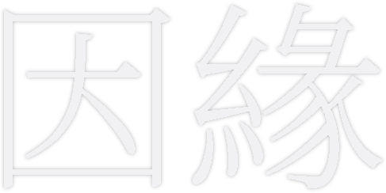

MEMORY.
기억. 記憶.
CONNECT.
기억으로 사람과 사람을 잇다.
기억은 사라지지 않습니다.
기억은 이어집니다.

緣YEON은 신경 기술을 통해
기억을 보존하고 경험할 수 있게 하며,
사람과 사람을 다시 연결합니다.
기억. 記憶.
기억으로 사람과 사람을 잇다.
기억은 사라지지 않습니다.
기억은 이어집니다.

緣YEON은 신경 기술을 통해
기억을 보존하고 경험할 수 있게 하며,
사람과 사람을 다시 연결합니다.